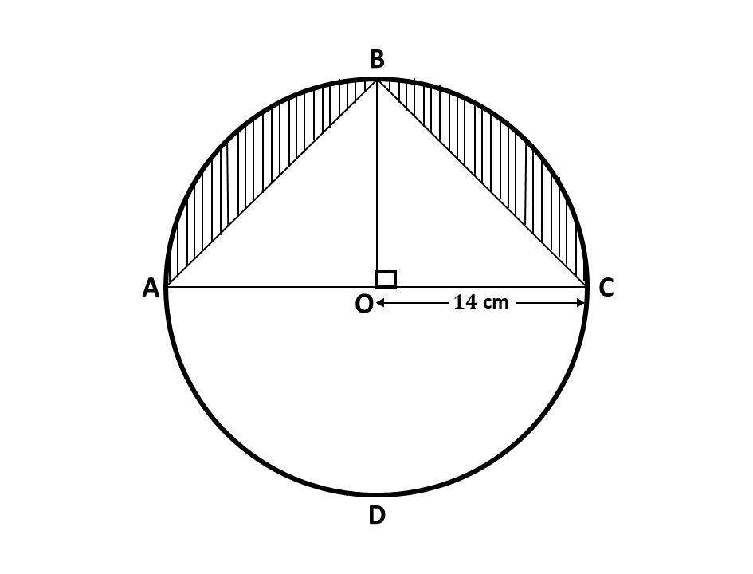
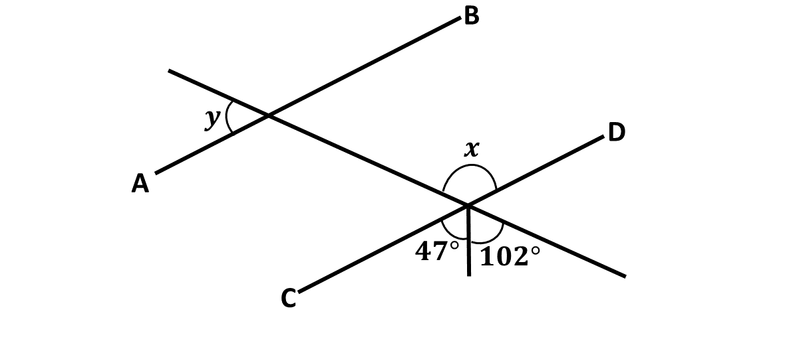

BECE
Year to Practice:
1990
1991
1992
1993
1994
1995
1996
1997
1998
1999
2000
2001
2002A
2002B
2003
2004
2005
2006
2007
2008
2009
2010
2011
2012
2013
2014
2015
2016
2017
2018
2019
2020
2021
2022
2023
2024
PAST QUESTIONS 2017
Time yourself to improve on your speed. You are to use not more than 60 minutes for this section.
Click on the link below when you are ready.
Try the questions first, using not more than 15 minutes for each question, and watch the accompanying videos to see how the questions are solved.
Question 1
-
In a class of 30 girls, 17 play football, 12 play hockey and 4 play both games.
\(\hspace{0.5cm} i)\) Draw a Venn diagram to illustrate the given information.
\(\hspace{0.5cm} ii)\) How many girls play:
\(\hspace{1cm} \alpha)\) one or two of the games?
\(\hspace{1cm} \beta)\) none of the games?
-
\( \)
In the diagram, \(ABCD\) is a circle of radius 14 cm and center \(O\). Line \(BO\) is perpendicular to line \(AC\). Calculate, the total area of the shaded portions.
\(\hspace{0.5cm}\) [Take \(\pi = \frac{22}{7}\)]
Question 2
-
Two consecutive odd numbers are such that seven times the smaller, subtracted from nine times the bigger, gives 144. Find the two numbers.
-
A paint manufacturing company has a machine which fills 24 tins with paint in 5 minutes.
\(\hspace{0.5cm} i)\) How many tins will the machine fill in
\(\hspace{1cm} \alpha)\) 1 minute, correct to the nearest whole number?
\(\hspace{1cm} \beta)\) 1 hour?
\(\hspace{0.5cm} ii)\) How many hours will it take to fill 1440 tins?
-
Given that \(s = \frac{n}{2}[2a + (n - 1)d]\), \(a = 3\), \(d = 4\) and \(n = 10\), find the value of \(s\).
Question 3
-
Using a ruler and a pair of compasses only, construct:
\(\hspace{0.5cm} i)\) a triangle \(ABC\) with \(|BC| = 9\) cm, \(|AC| = 8\) cm and \(|AB| = 6\) cm;
\(\hspace{0.5cm} ii)\) the perpendicular bisector of line \(BC\);
\(\hspace{0.5cm} iii)\) the bisector of angle \(ACB\).
-
Label the point of intersection of the two bisectors as \(Y\).
-
Draw a line to join \(B\) and \(Y\).
-
Measure:
\(\hspace{0.5cm} i)\) \(|BY|\);
\(\hspace{0.5cm} ii)\) \(|YC|\);
\(\hspace{0.5cm} iii)\) the base angles of triangle \(BYC\).
-
What type of triangle is \(BYC\)?
Question 4
-
The table below show the ages of students admitted in a hospital.

Use the information to answer the following questions:
\(\hspace{0.5cm} i)\) What is the modal age?
\(\hspace{0.5cm} ii)\) Calculate, correct to two decimal places, the mean age of the students.
-
Rice is sold at Gh₵56.00 per bag of 50 kg. A trader bought some bags of rice and paid Gh₵1,344.00.
\(\hspace{0.5cm} i)\) How many bags of rice did the trader buy?
\(\hspace{0.5cm} ii)\) If the trader retailed the bags of rice at Gh₵1.40 per kg, how much profit was made on 1 kg of rice?
Question 5
-
Using a scale of 2 cm to 1 unit on both axes, draw on a graph sheet two perpendicular axes \(Ox\) and \(Oy\) for \(-5 \leq x \leq 5\) and \(-5 \leq y \leq 5\)
\(\hspace{0.5cm} i)\) Plot, indicating the coordinates of all points \(A(2, 3)\) and \(B(-3, 4)\). Draw a line passing through the points \(A\) and \(B\).
\(\hspace{0.5cm} ii)\) Plot on the same graph sheet, indicating the coordinates of the points \(C(4, 2)\) and \(D(-2, -3)\). Draw a straight line passing through the points to meet line \(\overline{AB}\).
-
Using the graphs in \(5(a)\):
\(\hspace{0.5cm} i)\) find the values of \(y\) when \(x = -2\);
\(\hspace{0.5cm} ii)\) measure the angle between the lines \(AB\) and \(CD\).
Question 6
-
If \(\mathbf{m} = \begin{pmatrix} 2x + 1 \\ 2 - 3y\end{pmatrix}\), \(\mathbf{n} = \begin{pmatrix} 6 \\ -8\end{pmatrix}\) and \((\mathbf{m + n}) = \begin{pmatrix} 9 \\ -12\end{pmatrix}\), find the:
\(\hspace{0.5cm} i)\) values of \(x\) and \(y\);
\(\hspace{0.5cm} ii)\) components of \(\mathbf{m}\).
-
\(i)\)Solve the inequality:
\(\hspace{0.5cm}\) \(\frac{3}{4}(x + 1) + 1 \leq \frac{1}{2}(x - 2) + 5\)
\(\hspace{0.5cm} ii)\) Illustrate the answer in \(b(i)\) on a number line.
-
\(\)
In the diagram, \(\overline{AB}\) is parallel to \(\overline{CD}\).
Find the value of:
\(\hspace{0.5cm} i)\) \(x\);
\(\hspace{0.5cm} ii)\) \(y\).
For sponsorship or advertisement kindly call or whatsapp on 0208711375 or 0249969740.